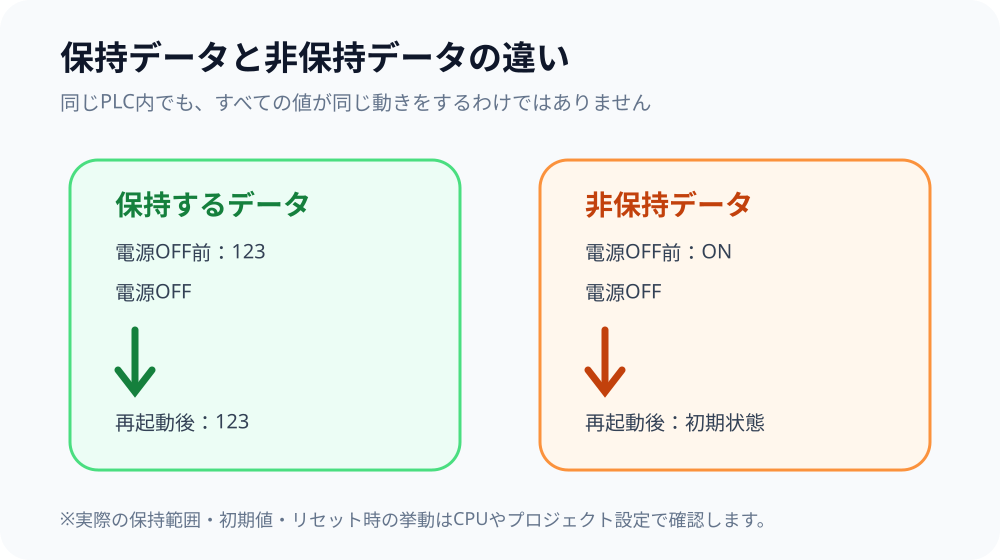
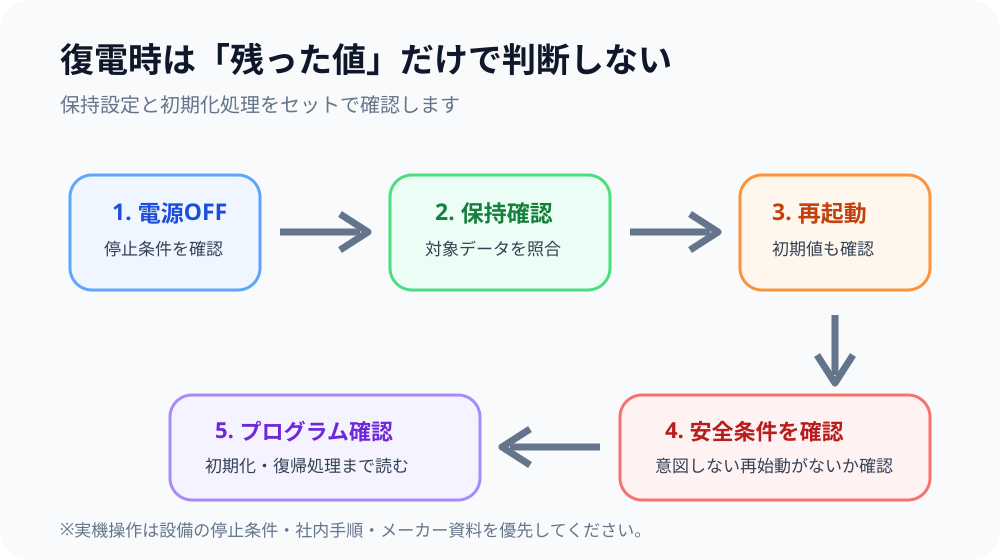
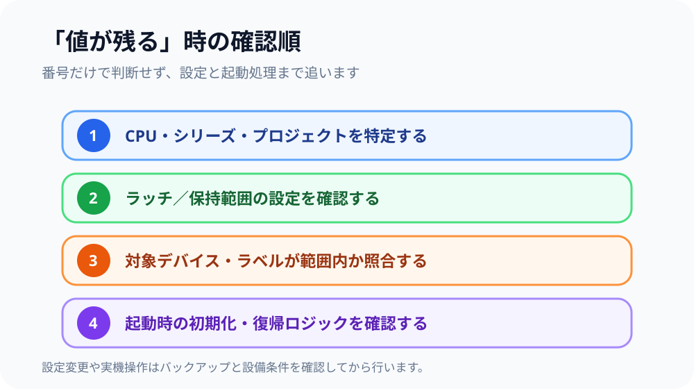

1. 先に結論
PLCの停電保持とは、電源OFFやリセットのあとも、設定されたデバイスやラベルの内容を維持するための仕組みです。三菱電機 MELSEC iQ-F の公式マニュアルでは LATCH FUNCTION として説明され、ラッチ対象のデバイスやラベルを設定して使います。
ただし、「Mなら残る」「Dなら残る」とデバイス記号だけで判断するのは危険です。 実際の保持範囲はCPUシリーズ、プロジェクト設定、デバイス種別、ラッチ範囲などで変わります。
初心者がまず覚えるポイント
停電保持は「PLC全体が前回の状態のまま復帰する機能」ではありません。残してよい値と、起動時に必ず初期状態へ戻す値を設計上分けるための仕組みです。

2. なぜ停電保持が必要なのか
設備には、電源を切っても次回起動時に残しておきたい情報があります。代表例は、累積回数、補正値、レシピ選択、保全用の記録などです。
一方、運転指令、一時的な内部条件、復電時に安全側へ戻すべき状態まで残すと、意図しない動作につながることがあります。そのため、「残すもの」と「戻すもの」を分ける設計が重要です。

停電保持は便利だけど、何でも残せばいいわけじゃないよ。再起動時に残っていると困る信号もあるからね。

「前回の値が残っている＝正常」と決めつけず、設計上残す予定の値かを見るんですね。
3. 保持する値・しない値をどう考える？
| 考え方 | 例 | 確認ポイント |
|---|---|---|
| 保持を検討する | 累積回数、補正値、必要なレシピ番号 | 電源断後も継続する意味があるか |
| 非保持を基本に考える | 一時的な運転指令、瞬間的な内部条件 | 復電時に意図しない状態を作らないか |
| 設計判断が必要 | 工程途中の状態、復旧用の管理値 | 初期化処理・復旧シーケンスと整合しているか |
機種依存の範囲は断定しない
どのデバイス番号が保持されるか、どのラベルがラッチ対象になるかは機種や設定によって異なります。実機では対象CPUのマニュアルとプロジェクト設定を照合してください。
4. 復電時は初期化処理まで確認する
停電保持の確認で見落としやすいのが、再起動時の初期化・復帰ロジックです。保持された値が残っていても、プログラム起動時に別の値へ書き換える処理があれば、最終的な状態は変わります。

安全関連の状態は特に慎重に
停電保持だけを理由に、復電後の設備が安全に再始動できると判断しないでください。非常停止、安全回路、インターロック、設備固有の復帰条件は別に確認が必要です。
5. 「値が残る」時の確認順
現場で「なぜこの値だけ残っている？」となった時は、次の順番で確認すると整理しやすくなります。

① CPU・シリーズを特定
対象CPU、プロジェクト、使用しているデバイスやラベルの種類を確認します。
② ラッチ設定を見る
プロジェクト設定で、どの範囲が保持対象として設定されているか確認します。
③ 対象が範囲内か照合
問題の値が保持範囲に含まれているかを確認します。
④ 起動時処理を読む
初回スキャン、初期化、復旧処理などで書き換えていないか確認します。
6. 具体例：累積カウンタ値を残したい場合
たとえば設備の総生産数をPLC内で管理している場合、電源を切るたびに0へ戻ると困るため、保持対象にする考え方があります。一方、単なる「運転中フラグ」は再起動時に残す必要がないケースが多く、初期状態へ戻す設計が自然です。
重要なのは、値の種類ではなく、その値が復電後も意味を持つかです。さらに、保持した値を使って設備がどのように復帰するかまで確認します。
7. よくある勘違いとトラブル
「Mだから消える」と思い込む
デバイス種別だけで保持可否を決めず、実際のラッチ範囲設定を確認します。
「Dだから残る」と思い込む
同じDデバイスでも設定範囲やCPUによって扱いが異なるため、番号だけで断定しません。
保持設定だけを見る
起動時プログラムで初期化される場合があるため、ラダー・ST・初期化処理まで確認します。
復電直後の状態を軽視する
運転指令や安全条件が意図した状態になっているかを別途確認します。
8. 公式資料で確認する時の見方
三菱電機 MELSEC iQ-F では、FX5シリーズのアプリケーション系マニュアルにラッチ機能の説明があります。記事では一般的な考え方だけを扱い、具体的な保持範囲・デバイス番号・設定項目は対象CPUの最新マニュアルとGX Works3プロジェクト設定を優先してください。
- 三菱電機 FA マニュアル検索（MELSEC iQ-F / FX5シリーズ） — 対象CPUのユーザーズマニュアル／アプリケーション編を確認
確認日：2026-09-08。最新版の版数・対象機種はメーカー公式ページで都度確認してください。
9. まとめ
- 停電保持は、電源断後も必要なデータを維持するための仕組み
- 保持対象と非保持対象を設計上分ける
- デバイス記号だけで保持可否を決めない
- CPU・プロジェクト設定・ラッチ範囲・起動時処理を順に確認する
- 復電時の安全条件と初期化処理まで合わせて確認する
迷った時の一言
「この値は電源を切ったあとも残る必要があるか？」と「残った値を使って再起動した時、安全で意図した動きになるか？」の2つを分けて考えると整理しやすくなります。